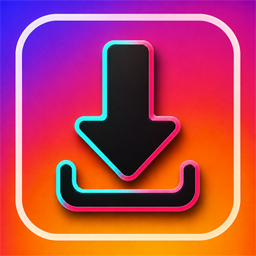
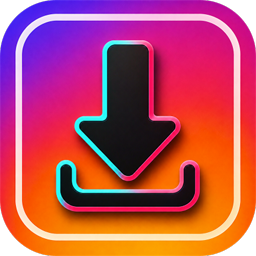

Download
- Paste link, share into the app, or Quick Platforms
- Parallel downloads with pause, resume, retry
- Foreground service keeps big files alive

Fast · Simple · Secure. Paste or share a link from a social app, save the video, then cut, crop, merge or watermark it without leaving the app.
supportedweb.txt lists 102 sites; only the ones above were downloaded end to end.
An existing Views-based codebase, adopted in place. Numbers come from app/build.gradle and the manifest on branch production/prod_2.4(6).
REQUEST_IGNORE_BATTERY_OPTIMIZATIONS was removed in September. Play restricts it.
Urdu and Arabic mirror the layout. Video timelines stay left-to-right, as in every player.
Seven competitors from Google Play, checked on 15 Sep 2026. Six of them are the APKs already in docs/competitors apk; InShot is the category leader.
| App | Developer | Installs (log scale) | Rating | Leads with |
|---|---|---|---|---|
| Video Downloader | InShot Inc. | 100M+ | 4.722,718,938 ratings | Browser with auto-detect, parallel downloads, password folder |
| Video Downloader HD · Vidow | VIDOXE Ltd | 100M+ | 3.97335,113 ratings | Resolution picker, batch, cast to TV |
| Video Downloader and 4k Player | Vidpal Apps Studio | 50M+ | 4.26401,387 ratings | Paste link, 4K player, private folder |
| All Video Downloader & Saver | Sky Vision Apps Lab | 10M+ | 4.0524,211 ratings | Story saver, 4K, private downloads |
| All video downloader and saver | Attractive Apps Valley | 10M+ | 3.9923,231 ratings | Resolution choice, story saver |
| Video Downloader & Save Video | Markhoor Studio | 10M+ | 4.009,511 ratings | Auto-detect, background, MP3 |
| Video Downloader · Player | Mobile Notepad Apps | 5M+ | 3.837,457 ratings | Browser, resume, music downloader |
| All Video Downloader & Saverour live listing | Cell Cave | 5+ | —not enough ratings | 9-tool editor, vault, status saver, 9 languages |
All seven competitors show "Contains ads" and "In-app purchases". Their subscription prices could not be matched to each app, so they are left out.
Every date is the commit that set the version in app/build.gradle.
Two-day device round: 24 bugs fixed, committed as 04615ac on development/dev_2.5_claud_testing. H1, H2, H5, H6 and the Instagram fix followed as d0b1daf; M6, M7 and M9 fixes are not yet committed.
New AdMob implementation; Play Store update.
Internal-testing bugs fixed, bundle for internal testing.
Firebase push, Crashlytics and Analytics; premium icon in toolbar.
Firebase config update; release AAB exported.
45-bug QA list closed; long-video merge verified.
Numbering reset from the inherited 10.0.8 (281).
c078338d50b4eef346fa113667999c8e566cdebf7f1892464b4e3e7e922deba6
AdMob with Meta Audience Network mediation. Every placement has an _id and a _control key in Remote Config (prefix VD_), so it can be turned off without a release.
| Format | Where it appears | Rules |
|---|---|---|
| Rewardeddownload gate | Before each download for free users: watch an ad or go Premium | If no ad fills or the network fails, the download continues. Offline taps now get a message first. |
| App Open | Splash, and on return from background | Cached ad valid 4 h. Not shown after pickers or the share sheet (fixed 14 Sep). |
| Interstitial | Language, Downloads button, Player button, video play, download location, onboarding | Max 8 per session, 60 s between full-screen ads |
| Banner · MREC · Native | Splash, language, onboarding, home, downloads screens | Preloaded and cached; new banner request at most every 30 s; collapses when no ad. Home MREC sits below the page content, clear of the FAB. The language screen uses an MREC only if 5 languages still fit, otherwise a banner. |
Prices as Google Play shows them in Pakistan. Monthly costs the same as four weekly payments, about 8% less than paying weekly for a calendar month, so the monthly plan barely stands out.
Real device captures from builds 7–15 on 14–15 Sep 2026. Some show Google test ads. Tap any screen to enlarge it.
The icon borrows two worlds: a violet-to-orange square and a download arrow with the cyan and pink edges of short-video apps. The app UI uses the orange-to-red half.
512 × 512 PNG
Meets Play spec
512 × 512 PNG, rounded
In appRequired by Play
Missing locallyPlay allows up to 1 : 2
Need framing#491FEE#C90C8A#FE5F02#FD0D28#FD7300#4CFEFC#FF629F#161315UI buttons use the #FE5F02 → #FD0D28 gradient. Dialog button text now uses #D9480F (about 4.6 : 1 on white).
Every bug from the four QA rounds, counted once. Each cutter output was checked with ffprobe and frame comparisons, not only that a file appeared.
| QA round | Found | Fixed | Open | Fix rate |
|---|---|---|---|---|
| 45-bug QA list10–18 Aug 2026 · team-reported bugs | 45 | 43 | 2 | 96% |
| 19-category audit14 Sep 2026 · IDs C1–C3, H1–H8, M1–M13, L1–L11 | 32 | 32 | 0 | 100% |
| On-device round14–15 Sep 2026 · cutter, platforms, downloads, RTL | 27 | 27 | 0 | 100% |
| High-bug follow-up15 Sep 2026 · found while fixing H1, H2, H5, H6 and Instagram | 5 | 5 | 0 | 100% |
| Low-severity re-audit15 Sep 2026 · accessibility, 130% font, translations, UX on the current build | 44 | 44 | 0 | 100% |
| Second device round16 Sep 2026 · LDPlayer, Android 9 · the tests left over from 15 Sep | 7 | 7 | 0 | 100% |
| Ads integration round16 Sep 2026 · code audit of 8,267 lines, then fixes verified on the phone | 7 | 7 | 0 | 100% |
| Total | 167 | 165 | 2 | 99% |
#19, text overlap in the link flow, needs a retest at several screen sizes. #25, "Add media to Vault", was never built; it is a missing feature rather than a defect.
Not counted as bugs, by the owner's decision: M2 delayed close on the premium screen, M5 Get Started with a banner on every launch (since changed at the owner's request), and M13 interstitial on tab switch are product requirements. Pinterest is outside the app's supported platforms. The website privacy policy text will be updated by the owner later.
How the score works: each of the 19 categories starts at 100 and loses 25 per open critical, 12 per high, 6 per medium, 4 per unrated and 2 per low bug, 3 per fix not yet checked on a device, and 5 per planned test that could not be run; the total is the average, capped while serious items remain — at most 69 with an open critical, 84 with an open high, 94 with an open medium, 95 with an unrated bug open, and 99 until every fix is device-checked. Load testing is not scored (no server component). 95 is what the rules give today: nothing critical, high, medium or low is open and every fix has been verified on a device, and the cap comes from the two unrated items, #19 and #25. Reaching 100 needs #19 retested at several screen sizes and #25 built.
Both high-severity ad placements put an ad where a tap meant for the app could land on it. They were fixed without removing either ad.
The H1 after-shot was taken while the app was in Urdu; the layout is the same in every language.
H5 put the privacy policy in images a screen reader cannot read. H6 sent links over plain HTTP, including to a raw-IP server that no longer answers.
| H6 check · same videos | Before (HTTP allowed) | After (HTTPS only) |
|---|---|---|
| TikTok | 56.80 s | 56.80 s · pass |
| 19.30 s | 19.30 s · pass after library fix | |
| X | 204.89 s | 204.89 s · pass |
| 63.04 s | 63.04 s · pass | |
| Vimeo | 596.54 s | 596.54 s · pass |
| Dailymotion | 77.39 s | 77.39 s · pass |
| 45.79 s | 45.79 s · pass after the Instagram fix | |
| Cleartext requests blocked | — | 0 |
Testing caught one regression before it shipped: a bundled Cloudflare library passed a bare host name that WebView loads over HTTP, which broke Facebook. It now passes a full HTTPS address. Ads were re-checked with HTTPS only.
Instagram stopped giving post data to logged-out requests. The public embed page still carries it, but only when the request looks like an embedded frame, and the app never said so. It found nothing, fell back to snapsave, and saved a carousel photo named .mp4.
| Post type | Before | After |
|---|---|---|
| Carousel · 1 video, 3 photos | 1 photo saved as .mp4 | video 45.79 s + 3 photos 1080×1350 |
| Reel | no video | 43.21 s · 720×1280 · audio |
| Single video | no video | 235.68 s · 854×480 · audio |
| TikTok, Facebook (regression) | 56.80 s, 19.30 s | 56.80 s, 19.30 s · unchanged |
Two older bugs surfaced on the way and were fixed: carousel items after the first were blocked as "download already in progress" because they share one post link, and Instagram videos were filed under "Facebook Videos" because Instagram serves them from fbcdn.net. Tested with ads switched off to save time; they must be switched back on before release. 0 crashes.
Each was measured before and after the change on the same phone, with ads switched on because three of the four involve ads.
| Bug | Before | After |
|---|---|---|
| M7 Home scroll · 10 flings | 530 frames · 99th pct 22–40 ms · slow UI 4–7 | 360 frames · 99th pct 18–28 ms · slow UI 2–4 |
| M8 40 rapid tab switches | Audit: 242 → 407 MB, WebViews 4 → 16 | 5 cycles: 286–336 MB, no upward trend · no change needed |
| M9 Offline launch to Get Started | ~8.4 s | ~2.6 s |
M7: the two looping toolbar icons redrew every frame; with animations off, frames halved and most slow frames went away. They now pause while the home page scrolls and resume 0.4 s after it stops. M9: with no network the splash waited through Remote Config retries (2 s + 4 s); retries are now skipped offline. M8 no longer reproduces on current code and was closed without a change.
The 14 open lows were four named items plus audit IDs L2–L11 whose details were never recorded. Rather than guess at those, the current build was re-audited in the same categories (accessibility, large font, translations, UX). That found 44 concrete issues; all are fixed. M5 was also changed at the owner's request, although it is not counted as a bug.
| Item | What was wrong | Verified result |
|---|---|---|
| M5 Get Started | Tap needed on every launch | First run still shows it; returning launches reach Home by themselves (~3.8 s, ads off); leaving during the splash and coming back also works |
| B-frame cut end | Trim/split ended ~4 frames early | 1–9 s trim: 240 frames, source frames 30→269 exact. 29.97 fps clip with audio: 245 frames, exact. Split: 150 + 150 frames, no gap. Re-encoded at 1.5× bitrate, SSIM 0.957, 7 s |
| Touch targets | 23 controls under 48dp (22–46dp) | All 48dp; drawn size kept with inset backgrounds; scanner clean on every screen |
| Screen reader labels | 8 issues: unlabeled buttons, "Mute all clips" on one clip, Snapchat tile read as "Vimeo" | Labelled in 9 languages |
| Translations | 7 issues: French "Back" was a sentence, "Close" untranslated in 7 languages, rate-us text broken in 6 | Fixed in all 9 locales |
| UX and large font | 6 issues: raw storage path, inaccurate "secure", cut titles, words split at 130% | Checked on screenshots at 100% and 130% |
| Vimeo folder | Vimeo saved to "Other Videos" | Own folder and Player card; a Vimeo download lands in it (16 Sep) |
| File names | Ids such as 449997484.mp4 | Real downloads: holler-academy-20260916-121906.jpg, LinkedIn-20260916-122411.mp4 (16 Sep) |
| Offline privacy policy | Outdated PDF when offline | All three sources checked on a device (16 Sep): live page, cached copy, bundled snapshot |
All of these were finished on 16 Sep in the second device round below. Debug APK size varies with incremental builds and is not a release figure.
The tests left over on 15 Sep were finished here, on a second device with a different Android version. That alone found seven bugs the phone could not show: an emulator has no fingerprint sensor, no Android 15 edge-to-edge, and it downloads fast enough for a carousel's four files to be queued in the same second.
| Found on the second device | What the user saw | Fixed and verified |
|---|---|---|
| Policy website address dead | The published policy and terms pages returned 404: the site moved to a new address | App now points at the new address; live page loads. The Play listing link still has to be updated by the owner |
| Carousel photos overwrote each other | An Instagram post with 4 items saved 2 files: all photos were given the same name | Names are reserved as they are handed out; the post now saves 1 video + 3 photos |
| Fingerprint message on every launch | "This device does not have a fingerprint sensor", in English, on a phone without a sensor | Biometric unlock is switched off silently, as it already was for "no fingerprint saved" |
| Policy opened in the browser | Settings → Privacy Policy left the app, so offline it showed the browser's error page | Opens in the app as a reading screen, with the offline fallbacks |
| Video names in the player | Downloads without a title read "20260916 121357" | Keeps the platform: "LinkedIn 20260916 122411" |
| "Dailymotion" split in two | At 130% font it wrapped mid-word | One line that shrinks to fit |
| Red strip above the policy title | On Android 9 the status bar painted red over a white screen | Transparent status bar on every Android version |
| Pending test, now done | Result on the second device |
|---|---|
| Privacy policy, all three sources | Live page loads; with the network blocked the cached copy shows; with no cache at all the bundled snapshot shows, now refreshed from the current page |
| Seven platforms, end to end | TikTok 56.80 s · Facebook 19.30 s · X 204.89 s · LinkedIn 63.04 s · Vimeo 596.54 s · Dailymotion 77.56 s · Instagram carousel (video + 3 photos). Every duration matches the phone, so the new naming and folder code changed nothing |
| File names and folders | Readable names with the platform and date; photos save as .jpg; each platform lands in its own folder, Vimeo included |
| French | Language picker, onboarding, premium, home, settings, policy title and rate-us all translated; rate-us opens the store listing |
| Get Started (M5) | First run shows it; returning launches reach Home in 5.1 and 5.8 s without a tap |
| 130% font, second row | Whole names on both rows after the fix |
0 crashes and 0 ANRs across the round. An emulator is not a substitute for a phone — it translates ARM code and its Android 9 storage rules differ — but as a second Android version it earned its place. Still not covered: other Android versions and screen sizes, a release build, and a real incoming call.
The ad code was reviewed in full — configuration, consent, caching, pacing, placements and every request path — and scored 80 / 100. The engineering was strong; the revenue settings were not. Six items were fixed and re-tested on the device, which lifts it to 86 / 100. What still holds it back is a missing ad unit, not code.
| Fixed | What it was | Proof on the device |
|---|---|---|
| Fixed-size banners | Downloads, Settings and Gallery asked for the old 320×50 banner | Requests now log size=360x56_as — the adaptive size Google serves today |
| No collapsible banner | The cheapest banner uplift available was unused | First request of each session logs requesting collapsible banner (position=bottom) |
| Retry was one rule for every failure | Two tries, five seconds apart, whatever went wrong | Network dropped mid-request → "waiting for a network before retrying"; network back → "network back — retrying load". No fill now waits 3× longer, and delays carry ±20% jitter |
| Cached ads refused offline | An ad already paid for was not shown without a network | Airplane mode on, Downloads tab: the cached interstitial still showed, 0 "No Internet" blocks on the show path |
| No duplicate-load guard on banners | Two screens attaching at once fired two requests for one slot | Fast tab flipping logged 3 × "Already Loading" instead of extra requests |
| Missing ANR flags | SDK init and ad loading ran on the main thread | OPTIMIZE_INITIALIZATION and OPTIMIZE_AD_LOADING confirmed inside the built APK |
| Empty slot after a tab switchfound during this testing | The shared bottom banner was re-requested on every visit and the 30-second rule left it blank | The attached banner is reused: "Banner already attached to this container" |
| Still open on the money side | Why it matters |
|---|---|
| Native ad unit does not exist | The highest-earning in-feed format is switched off: the unit was never created in the new AdMob account, so Home and Downloads have no native slot |
| Rewarded-interstitial unit missing | Same cause; a fallback format the app can already show |
| One mediation partner (Meta) | Fill rate has a ceiling with a single partner |
| Three full-screen ads before Home on first run | Splash app-open, language and onboarding interstitials, with the splash one exempt from the 60-second spacing |
| Download gate preloads two formats | Rewarded and interstitial both load; the unused one expires unseen |
Testing used the live ad units with the QA phone registered as a test device, so every impression in this round was a test creative and none of it reaches the AdMob account as real traffic. 0 crashes and 0 ANRs. A download with ads on still finished in 62 s with correct audio and duration.
The whole ad stack was read (8,267 lines) and scored. Banners are adaptive and the bottom one asks for a collapsible ad; a failed load now waits for the network instead of a timer; a cached ad shows offline; duplicate banner requests are blocked; and the two Google ANR flags are in the manifest. Verified on the phone with test creatives on the live units.
Offline policy, seven-platform downloads, file names, the Vimeo folder and the French flow all verified. The emulator exposed seven bugs a phone hides — among them a dead policy website address and carousel photos overwriting each other. All seven fixed and re-tested.
Returning launches skip Get Started. Clips end on the exact frame. A re-audit found and fixed 44 accessibility, large-font, translation and UX issues. Offline policy, file names and Vimeo folder await their device tests.
The unused OneSignal SDK is gone: 13 manifest components and 18 permissions (mostly launcher badges) removed, APK 38.5 → 36.7 MB. Firebase push stays; TikTok download and its notification re-tested, 0 crashes. Website policy text deferred by the owner.
M2, M5 and M13 are the owner's product requirements and Pinterest is out of scope, so they no longer count as bugs. No medium bug in the app itself is left open.
Trim screen Save button pinned, toolbar animations pause while scrolling, offline splash no longer waits for retries. Tab-switch memory growth no longer reproduces. H1–H6 and Instagram committed as d0b1daf.
Posts now read from the embed page: reels, videos, photos and whole carousels. Carousel items no longer block each other, and Instagram files go to their own folder. No high-severity bugs left open.
Privacy policy shown as text; app switched to HTTPS only and the dead HTTP server removed. Six top platforms re-downloaded with identical results. Instagram started returning 403, confirmed unrelated with a control build.
Home MREC moved below the content with a clipped strip above the bottom bar. The language screen picks MREC or banner from the space available. A tap on the lowest language row selected the language, not the ad.
9 cutter tools, 7 platforms, pause/resume/cancel, vault, share-in, offline, 130% font and Urdu. 28 bugs found, 24 fixed; 0 crashes and 0 ANRs across both days.
35 findings: permission flow, exported activities, battery-optimization policy, localization and trim accuracy. 13 fixed that day, including all 3 critical; H1, H2, H5, H6 and M11 followed on 15 Sep. Started at 72.
New account's ad units confirmed on device; logcat reported aligned=true.
Preload and cache for banners and natives; expiry and refill for full-screen formats; delete fixed by restoring the MediaStore consent dialog.
A 28:49, 781 MB two-clip merge passed; merging made about 1.8× faster. #19 and #25 stayed open.
Blur crash, stuck image download and the Arabic flag placeholder fixed; ten QA-reported bugs closed.
Full read-through into three reference notes. Large downloads no longer die after ~5 minutes in the background.
Set ADS_ENABLED back to true, commit the M6, M7, M9, OneSignal-removal, M5 and low-severity changes, update the privacy policy URL in the Play listing (the old one 404s), build a signed AAB, make the feature graphic and framed store screenshots.